Showing all 50 posts

5 Signs That Your Laptop Needs Servicing
Learn five common signs that your laptop needs professional servicing, from overheating and slow performance to battery and hardware problems.

Inkjet vs Laser Printer: Which Is Right for You?
Compare inkjet and laser printers by print quality, speed, running costs, maintenance and use case to choose the right printer for home or office.

How to Choose the Right Laptop for Your Needs
A practical laptop buying guide covering purpose, processor, RAM, storage, display, battery, portability, connectivity and budget.
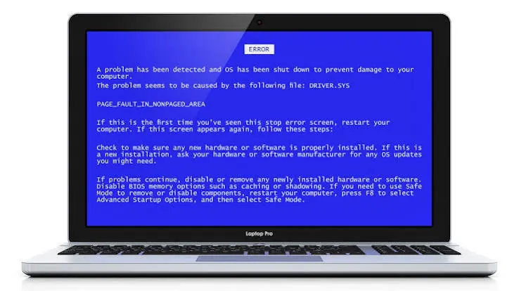
5 Common Laptop Problems and How to Deal With Them
Discover five common laptop problems and practical first steps for troubleshooting slow performance, overheating, battery, Wi-Fi and startup issues.

7 Simple Ways to Maintain Your Printer
Keep your printer reliable with seven practical maintenance habits covering cleaning, paper, cartridges, software, placement and regular use.
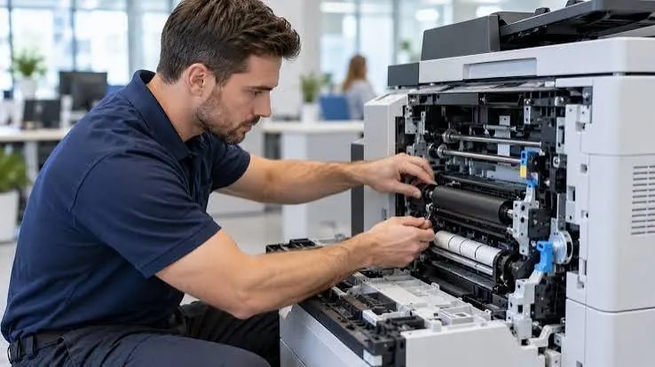
Why Regular Printer Servicing Is Important for Businesses
Understand why regular business printer servicing reduces downtime, improves print quality, controls costs and supports a productive workplace.
Laptop Buying Guide for Small Businesses
Choose business laptops with the right performance, security, durability, connectivity, warranty and lifecycle cost for your small business.

Why Choose Professional Laptop and Printer Repair Services?
Explore the benefits of professional laptop and printer repair, including accurate diagnosis, safer repairs, suitable parts, data protection and service accountability.

Meet Printerworld: Your One-Stop Shop for Printers, Laptops and Repairs
Introduce Printerworld as a convenient destination to explore printers, laptops, accessories and repair support, with practical advice for choosing the right solution.
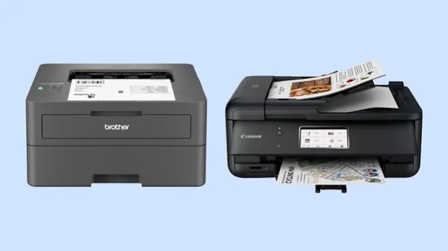
How to Choose the Right Printer: A Complete Buying Guide for Home and Office
Compare printer types, running costs, print volume, connectivity and features to choose the right printer for home or office use.

The Ultimate Laptop Buying Guide: What to Check Before You Buy
Use this laptop buying checklist to compare performance, memory, storage, display, battery, build quality, connectivity, warranty and value.

Printer Offline? 8 Quick Fixes to Get Back to Printing
Is your printer showing offline? Try eight practical checks for power, Wi-Fi, cables, print queues, default settings, drivers and network connections.

Why Is My Laptop So Slow? 12 Fixes to Speed It Up
Learn twelve practical ways to troubleshoot a slow laptop, from startup apps and storage cleanup to updates, malware checks, cooling and hardware upgrades.

Original vs Compatible vs Refilled Cartridges: What Is Best for Your Printer?
Compare original, compatible and refilled printer cartridges by quality, price, reliability, warranty considerations and environmental impact.

How Often Should You Service Your Laptop? A Simple Maintenance Schedule
A practical laptop maintenance schedule covering weekly checks, monthly cleaning, annual servicing, warning signs, and preparation for repair.

7 Signs Your Printer Needs Professional Repair
Learn seven warning signs that indicate your printer may need professional repair, from recurring paper jams and poor print quality to unusual noises and persistent errors.

How to Set Up a Network Printer for Your Whole Office
A practical guide to setting up a shared office printer over Ethernet or Wi-Fi, installing drivers, managing access and troubleshooting common connection issues.

Back-to-School Tech Checklist: The Printers and Laptops Every Student Needs
Prepare for the school year with a practical student technology checklist covering laptops, printers, accessories, software, safety and study habits.
Inkjet vs Laser Printers: Which One Should You Buy?
Compare inkjet and laser printers for home and office use, including print quality, speed, consumables, maintenance, workload and total cost.
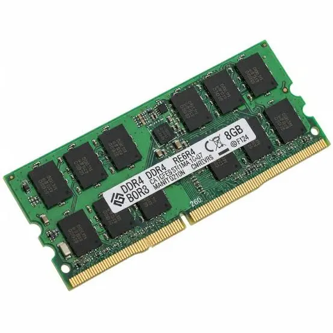
How Much RAM Do You Really Need in a Laptop?
Understand laptop RAM requirements for everyday use, students, office work, programming, creative applications and gaming, plus upgrade considerations.

Why Is My Printer Printing Blank Pages? Causes and Fixes
Discover why your printer produces blank pages and learn practical checks for ink, toner, printheads, drivers, settings and paper.
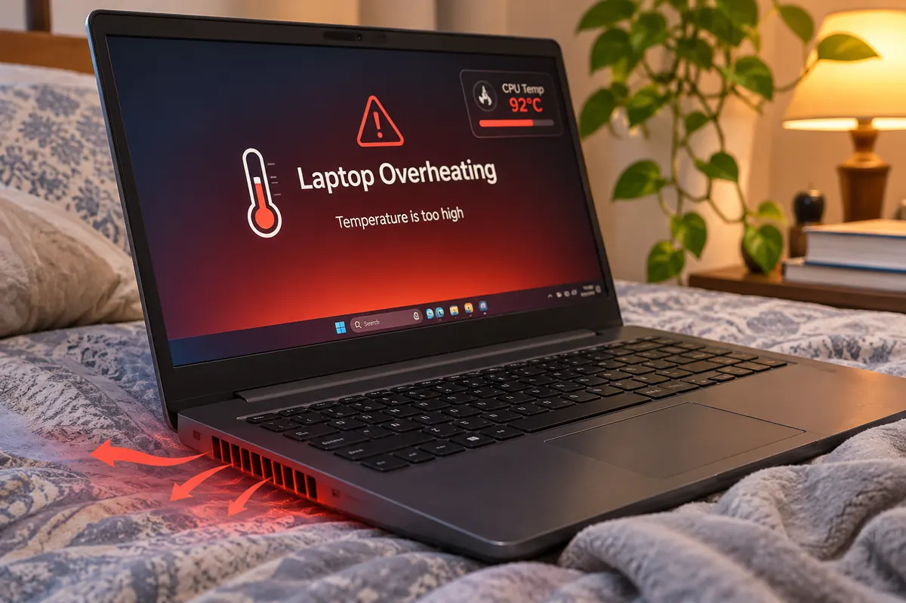
Laptop Overheating? Causes, Fixes and When to Seek Repair
Learn why laptops overheat, how to improve cooling, which habits to avoid and when a technician should inspect the device.
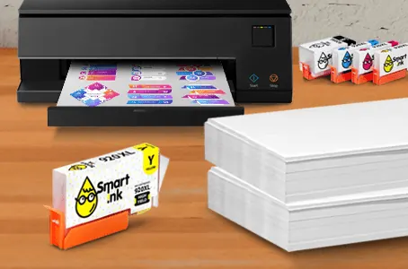
12 Ways to Make Your Ink Cartridges Last Longer
Reduce ink waste and printing costs with practical document, settings, maintenance and cartridge-storage habits.

How to Clean Your Laptop Safely: Screen, Keyboard and Vents
A practical guide to cleaning a laptop screen, keyboard, touchpad and vents without damaging delicate components.

Printer Maintenance 101: How to Clean and Care for Your Printer
Learn a practical printer maintenance routine covering exterior cleaning, paper handling, inkjet printheads, laser components and troubleshooting.
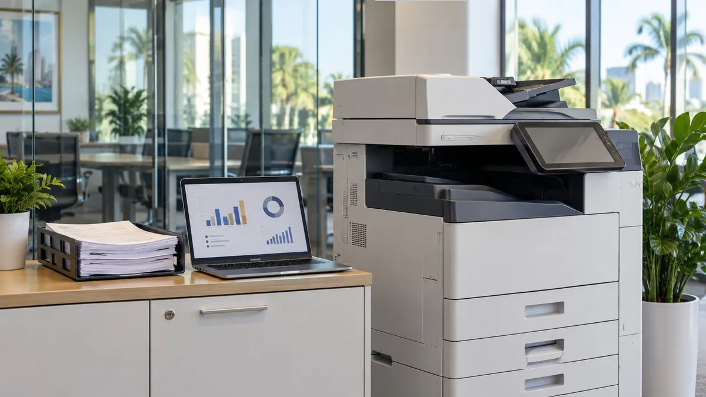
Print Management for Small Businesses: How to Control Costs and Access
Learn how small businesses can control printing costs, manage access, improve document security and build a practical print policy.

Work-from-Home Setup Guide: The Laptop, Printer and Accessories You Need
Plan a practical home office with the right laptop, printer, desk accessories, connectivity and security essentials.

All-in-One Printers Explained: Is a Print, Scan and Copy Machine Worth It?
Understand all-in-one printer features, advantages, limitations and running costs before choosing a print, scan and copy device.

SSD vs HDD: Which Storage Is Better for Your Next Laptop?
Compare SSD and HDD storage by speed, durability, capacity, price and everyday use to choose the right laptop configuration.

How to Fix a Paper Jam Without Damaging Your Printer
Learn how to remove jammed paper safely, prevent repeat jams and recognise when a printer needs professional attention.

Laptop Won't Turn On? What to Check Before Calling a Technician
A safe troubleshooting guide for a laptop that will not power on, covering charging, displays, power resets and warning signs.

Ink vs Toner: What Is the Difference and Which Do You Need?
Compare ink and toner, understand inkjet and laser printing, and choose supplies based on print volume, quality and running costs.

Cracked Laptop Screen: Repair or Replace?
Find out when a cracked laptop screen can be repaired, what affects replacement cost and how to protect your data and device.
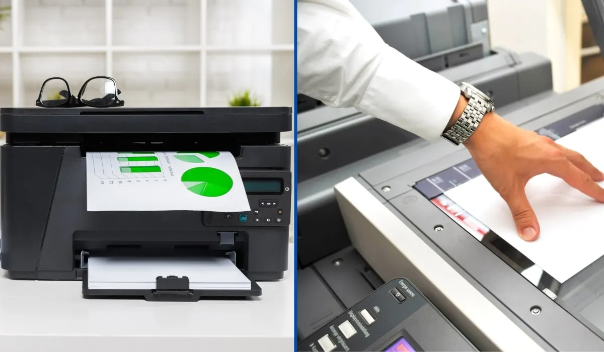
Repair or Replace? How to Decide When Your Printer Starts Failing
Use printer age, repair cost, print volume, reliability and supply availability to decide whether to repair or replace a failing printer.

How to Secure Your Office Printer and Protect Sensitive Documents
Secure your office printer with practical steps for network access, firmware, user permissions, confidential print jobs and safe disposal.

10 Laptop Accessories That Boost Productivity
Discover ten practical laptop accessories that can improve comfort, organisation, connectivity and productivity at home, school or work.
7 Features to Look for in a Home Printer
Compare seven important home-printer features, from printing technology and connectivity to duplexing, scanning and running costs.

Intel vs AMD Laptops: Which Processor Is Right for You?
Understand Intel and AMD laptop processors by performance, battery life, graphics, price and workload before choosing your next laptop.
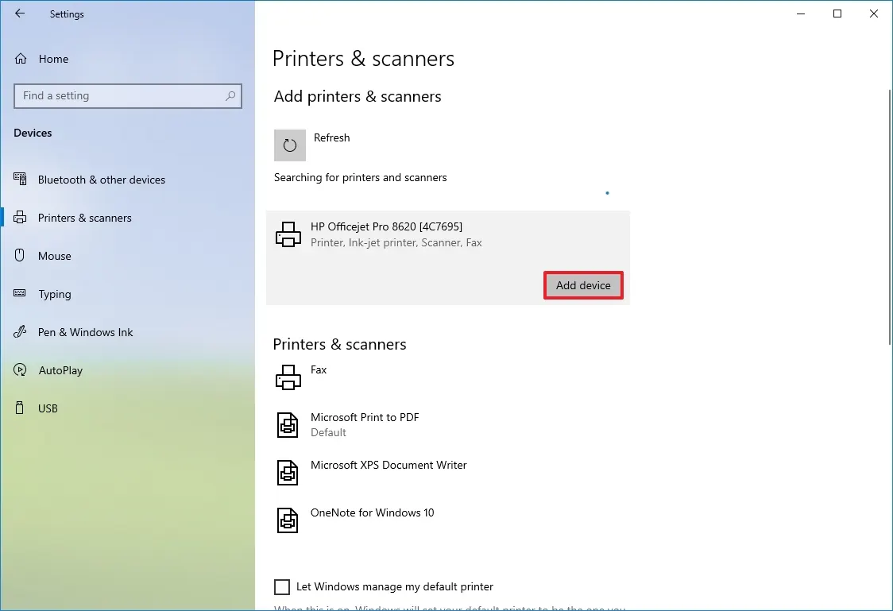
Printer Not Connecting to Wi-Fi? A Step-by-Step Troubleshooting Guide
Fix common wireless printer connection problems with practical checks for Wi-Fi, router settings, drivers, network bands and printer setup.
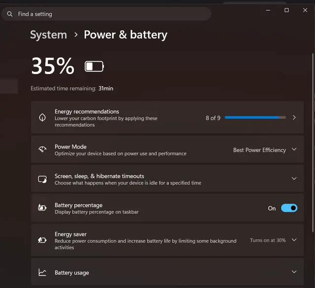
Why Is My Laptop Battery Draining So Fast? And How to Fix It
Find common causes of fast laptop battery drain and learn how to improve battery life through settings, apps, screen use and battery care.

How to Choose the Right Printer Paper for Documents, Photos and Presentations
Learn how paper weight, finish, brightness, size and printer compatibility affect results for everyday documents, photographs and presentations.

Laptop Battery Replacement: Signs It Is Time and What to Expect
Recognise common signs of laptop battery wear, understand replacement options and prepare safely for a battery service.
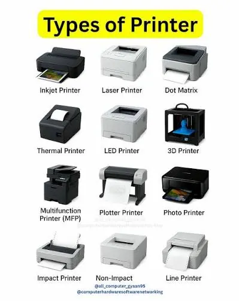
How Long Do Printers Last? Lifespan by Type and How to Extend It
Explore typical printer lifespan factors, differences between inkjet and laser models, warning signs and maintenance habits that support longer use.

The Complete IT Equipment Checklist for a New Office Setup
Plan a new office technology setup with a practical checklist for computers, networking, printers, security, accessories and ongoing support.

How to Protect Your Laptop from Viruses and Malware: A Practical Guide
Protect your laptop from viruses, ransomware and other malware with practical habits for updates, downloads, passwords, backups and safe browsing.

How to Pick the Best Printer for a Small Business Office
Choose the right office printer for your small business. Compare inkjet and laser technology, running costs, speed, connectivity, security, and maintenance before buying.
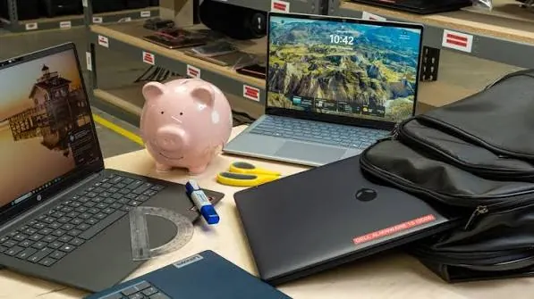
Best Laptops for Students: What to Look for on a Budget
Find a student laptop that balances price, battery life, performance, portability, and durability. Learn which specifications matter and where you can save money.

Why Are My Printouts Streaky or Faded? How to Fix Poor Print Quality
Fix streaky, faded, or uneven printer output with practical checks for ink, toner, printheads, drums, paper, settings, and maintenance.

Laptop Wi-Fi Not Working? Easy Troubleshooting Steps
Fix common laptop Wi-Fi problems with a clear troubleshooting guide covering airplane mode, network settings, routers, drivers, passwords, and connection tests.
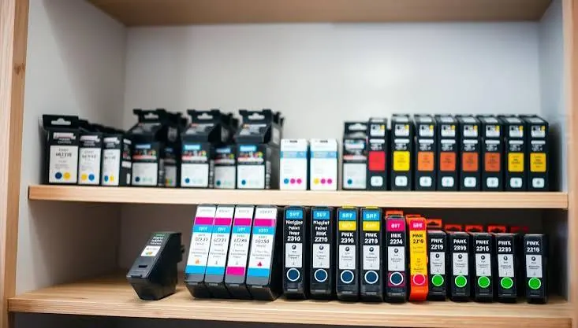
How to Store Ink and Toner Cartridges Properly
Protect printer ink and toner cartridges from heat, moisture, light, and damage. Learn safe storage, handling, shelf-life checks, and when to replace supplies.